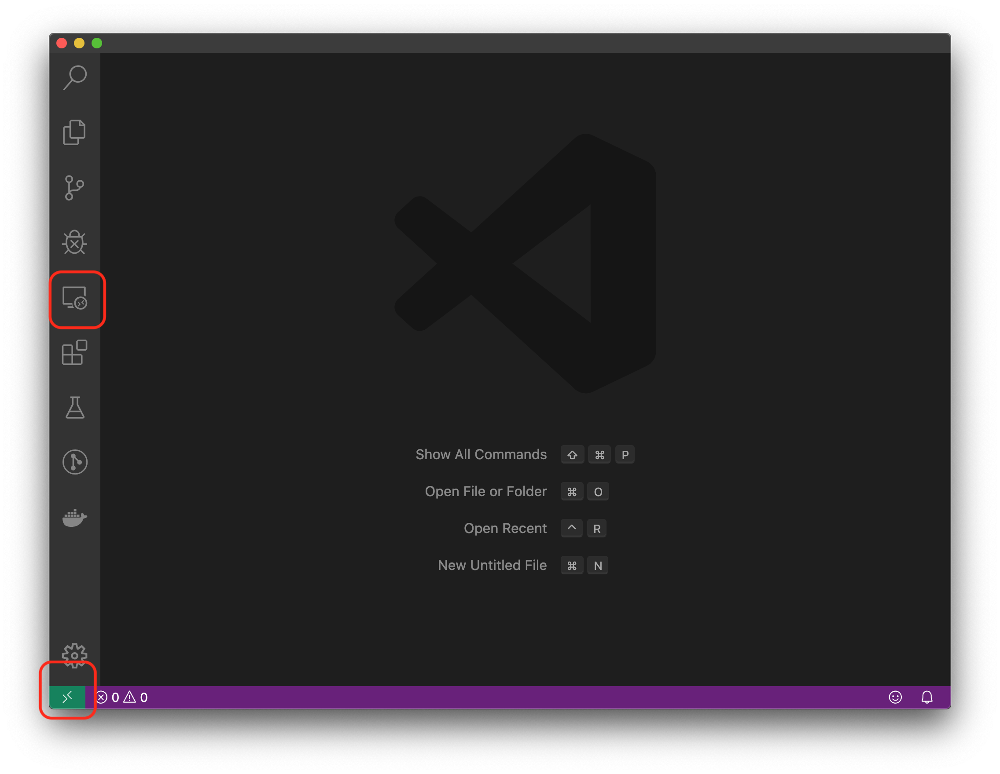

Cloud - Tutorial
In questa sezione vedremo praticamente come fare il deploy di una applicazione in cloud con AWS.
Creare un'istanza
Dopo aver fatto il login, nella pagina che vi si presenta selezionare "Go to Classroom" e quindi la propria classe.
Dopo un paio di click si dovrebbe aprire una pagina di Vocareum, dove potete vedere il vostro credito residuo. Cliccate sul bottone AWS Console.
Ora vi ritrovate in una console reale di AWS! Ricordatevi di rimanere sempre in Virginia Settentrionale, altrimenti il vostro credito non funzionerà.
Dalla lista dei servizi in alto, selezionate EC2. Nella pagina che si apre, selezionate il bottone blu per lanciare una nuova istanza. Lasciate tutto di default: Linux Amazon 2 AMI su x86 a 64bit, e t2.micro.
Generate una nuova chiave privata quando richiesto, con il vostro cognome tutto minuscolo. ATTENZIONE! mettete la chiave privata in un luogo sicuro, per esempio inviatevela per posta o copiatela su una chiavetta. Se perdete il file, non potrete più accedere alla vostra istanza; se qualcuno entra in possesso del file, potrà entrare e modificare la vostra istanza cloud.
Non chiudere la finestra della dashboard, ci servirà in seguito.
CHECKPOINT Controllare sulla dashboard che l'istanza sia "running".

Accedere all'istanza da VSCode
In questo tutorial accederemo all'istanza direttamente da Visual Studio Code, perché ci permetterà uno sviluppo più rapido e senza intoppi.
Installare Remote-SSH extension
Aprire VSCode, andare nel pannello verticale a sinistra su "Extensions", cercare ed installare l'estensione Remote - SSH di Microsoft.
Dopo l'installazione, vi comparirà una nuova icona nel pannello a sinistra e un quadratino verde in basso a sinistra.
CHECKPOINT Controllare che VSCode sia come in figura.

Copiare la chiave
Per potersi connettere correttamente, la vostra chiave privata deve stare dentro la cartella .ssh della vostra home.
- controllate che esista la cartella
.sshdentroC:\Users\NomeUtente\, se non esiste createla - copiate la vostra chiave privata all'interno della cartella
CHECKPOINT
Controllare che la vostra chiave privata sia all'interno della cartella .ssh del vostro utente.
Configurare il target
- da VSCode, premere sull'icona "Remote Explorer" nel pannello di sinistra.
- passare il mouse nella barra dove è scritto "SSH Targets" e premere su
+ - copiare dalla dashboard di AWS la stringa per connettersi alla macchina e incollarla nella casella di VSCode; la stringa la trovate selezionando l'istanza e facendo click su "Connect" in alto.
- tornate sulla barra di SSH Targets, cliccate ora sulla rotella e cliccate sulla prima voce
- modificare il percorso della vostra chiave con il path completo del file, ovvero
C:\Users\NomeUtente\.ssh\nomechiave.pem

Checkpoint A questo punto dovete avere un target pronto per connettervi.

Connettersi alla macchina remota
Da VSCode, connettetevi al target appena creato premendo sulla piccola icona con la finestra ed il + vicino al nome del target. Vi si aprirà una nuova finestra con una sessione di VSCode sulla macchina remota.
Aprite un terminale da VSCode.
Checkpoint Controllate di avere una finestra del genere e che l'utente remoto da terminale si ec2-user.

Configurare l'istanza
Per configurare l'istanza, la prima volta fate come segue.
sudo yum update -y
# install docker and docker-compose
sudo yum install docker -y
sudo groupadd docker
sudo usermod -aG docker $USER # logout per avere effetto
CHECKPOINT Eseguite il comando docker --version e assicuratevi di non avere un messaggio di errore.